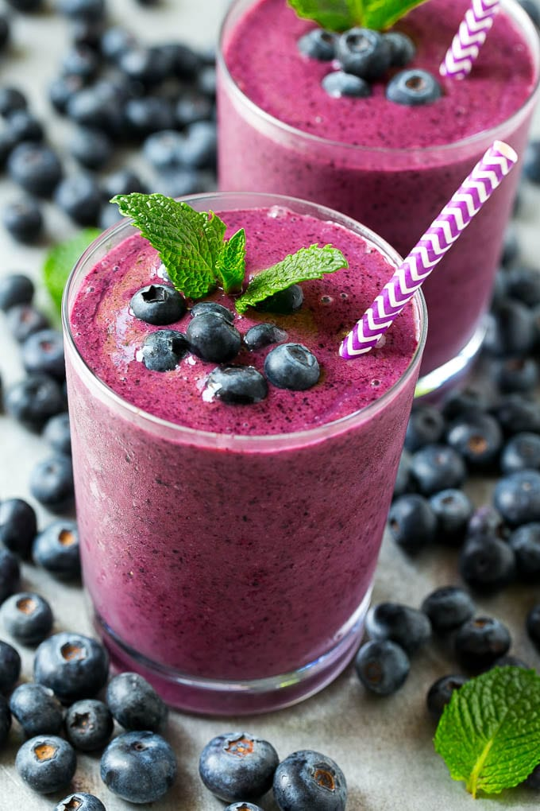

Research has shown that in addition to reducing the risk of cognitive damage, blueberries can also improve a person's short-term memoryTrusted Source and motor coordination.
Blueberries help to prevent constipation and maintain regularity for a healthful digestive tract because of their fibre content.
Dietary fibre is an important factor in weight loss and weight management by functioning as a "bulking agent" in the digestive system. High fibre foods increase satiety, or the feeling of being full, and reduce appetite.
The content in blueberries supports heart health. The absence of cholesterol from blueberries is also beneficial to the heart. Fibre content helps to reduce the total amount of cholesterol in the blood and decrease the risk of heart disease.
Just because this is a quick and easy smoothie does not mean it lacks any nutritional value. This no hassle smoothie is perfect for those who are in a rush in the morning and usually skip breakfast.
A renowned superfood, blueberries sit on the thrown when it comes to the levels of antioxidants, they contain. These have been linked to helping prevent and fight against cancerous cells developing in your body. In addition, antioxidants can reduce the speed at which your brain ages, and help improve your memory